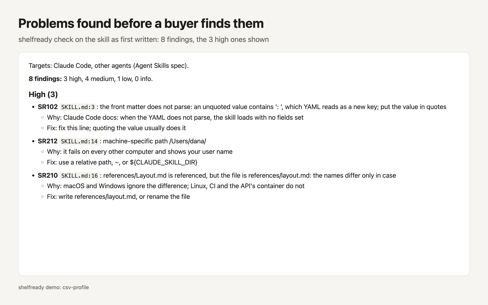
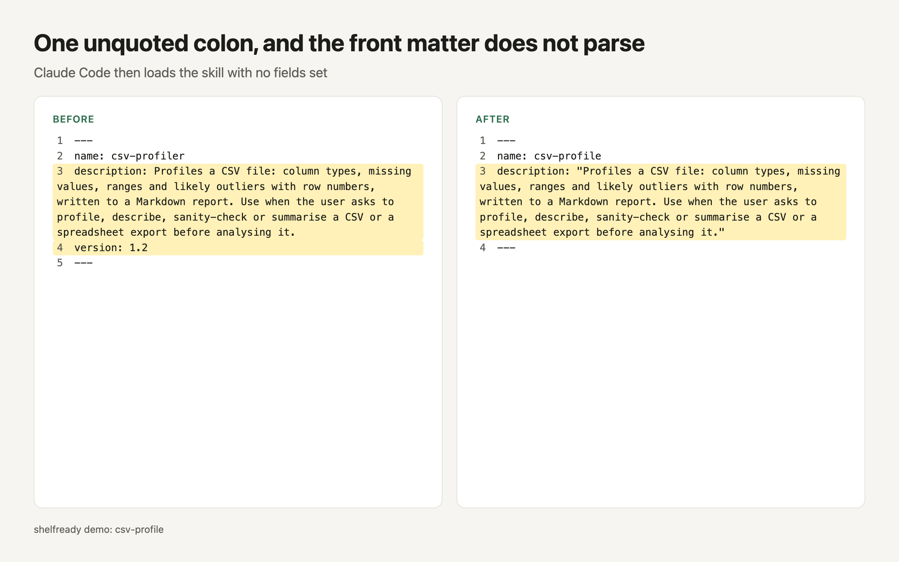
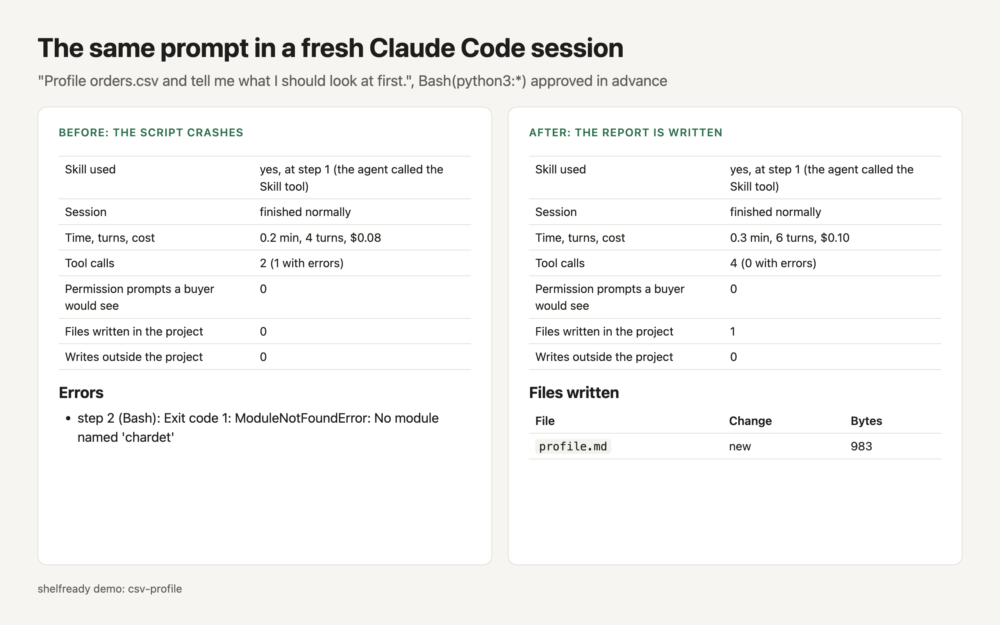
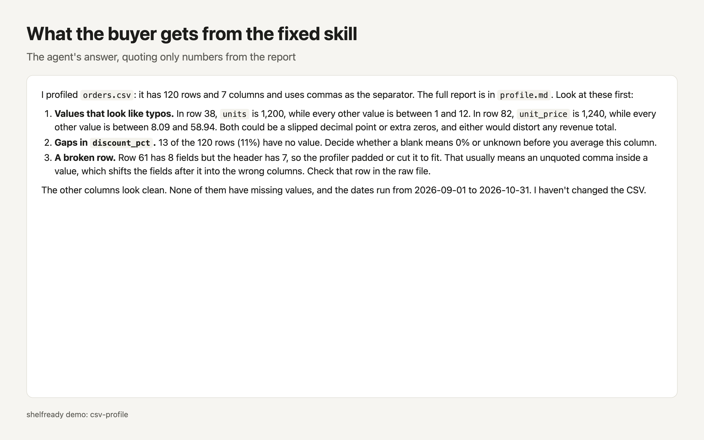

Shelf Ready: Agent Skills Checked and Test-Run Before You Publish
Your agent checks your skill against the spec and the platforms' rules, runs it in a fresh Claude Code session the way a buyer installs it, and turns that run into screenshots, a docs page and listing copy.
What it does
You wrote a skill. Before anyone else installs it, your agent:
- Checks it against the Agent Skills specification, Anthropic's rules for claude.ai and the API, and Claude Code's docs: front matter that does not parse, names and descriptions that break the rules, files the instructions point to that are missing or differ in case, paths that only exist on your computer, Python packages your scripts import but your docs never mention, files that should not ship, and plugin and marketplace manifests. Every finding has a file, a line, the rule's source and a fix.
- Runs it once in a fresh Claude Code session, installed the way a buyer gets it, with your own settings, skills and MCP servers left out. The digest says whether the agent used the skill, which permission prompts a buyer would see, what failed, which files it wrote, and what the run cost.
- Turns that run into screenshot cards, a docs page, and checks your listing copy: every number in it must come from a run, and promises no run can show are flagged.
- Zips it, and refuses while a serious problem is left.
It does not review security, and it does not submit anything for you.
A real example
A small skill, csv-profile, written for this page with seven mistakes planted. check found all seven:

The first one is easy to miss: one unquoted colon in the description, and the front matter does not parse.

Then the same prompt in a fresh session. The first version's script crashed on a package the skill never declared; the fixed version wrote its report.


Both runs used Claude Code 2.1.322 with its default model: 0.2 minutes and $0.08 for the first, 0.3 minutes and $0.10 for the fixed one.
How well the check works
To measure it, an independent agent that never saw this tool took 30 real open-source skills and plugins from 8 public repositories, planted 65 realistic mistakes of 20 kinds of its own choosing, and labelled each one. The checker on sale (0.1.2's rules, unchanged in 0.1.3) was then run once on the planted copies and on the untouched originals:
| Result | |
|---|---|
| Planted mistakes found | 48 of 65 (73.8%; 95% interval 62.0-83.0%) |
| ... reported as medium or high | 46 of 65 (70.8%) |
| ... leaving out three kinds it does not look for | 48 of 56 (85.7%) |
| Medium or high findings on the 30 untouched originals | 7, of which a second independent agent judged 4 real and 3 false alarms |
It does not look for: options your instructions use that your script does not accept, commands that only work on one operating system, and scripts that find their files from the working directory. It also missed a broken plugin hook script, a TypeScript error and an editor backup file.
All three rounds, with each version's weaknesses and what changed after each, are on the evaluation page. The middle one is why this version keeps guesses as low notes: its serious findings on untouched skills were mostly false alarms.
Get it
$29 once on Gumroad: shelfreadytools.gumroad.com/l/shelf-ready. You get the plugin zip with the tool inside, the README, the licence terms and the changelog, and updates for 12 months. One licence per person who uses it.
Install
You need Python 3.9 or newer. run needs Claude Code; shots and page need Chrome, Chromium, Edge or Brave. Nothing else is installed.
- Claude Code: unzip, then
/plugin marketplace add <the unzipped shelf-ready folder>and/plugin install shelf-ready@shelf-ready-tools. Then ask: "Get my skill inmy-skillready to publish." - Other agents: copy
skills/shelf-readyinto the agent's skills folder. - By hand:
python3 skills/shelf-ready/scripts/shelfready.py check <your skill>.
What it reads and sends
check, shots, listing, page and pack read your files and write their outputs next to them; they make no network requests. run starts Claude Code on your own account, in a throwaway folder, with the budget you set (2 US dollars by default).
Limits
- No security review. Read what a skill's scripts do before you run them.
runuses Claude Code only.checkalso knows the rules of claude.ai and the open spec that other agents follow, but nothing here runs the skill in those agents.- Marketplaces review listings with their own rules; read their current submission pages.
Questions
Does it change my skill? check and pack never change it. When your agent fixes a finding, it tells you the file and line.
What does a run cost? What the Claude Code session costs on your plan. The two runs above cost $0.08 and $0.10; --budget caps it.